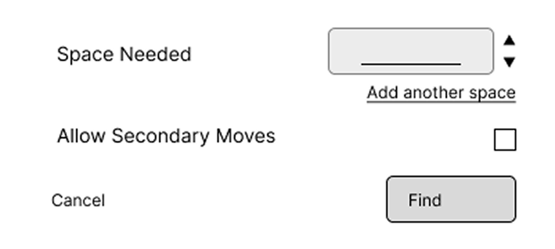
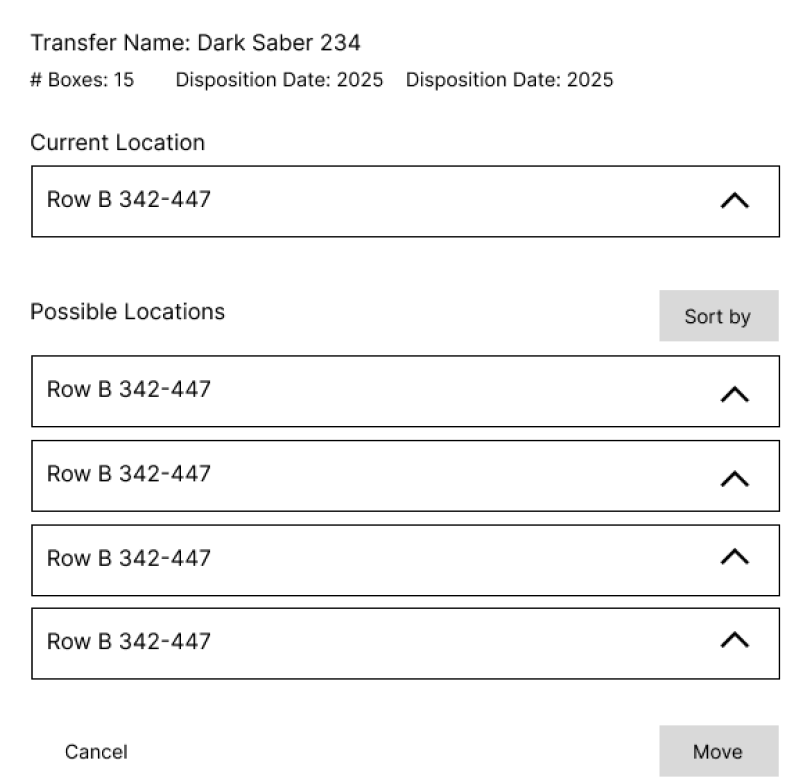
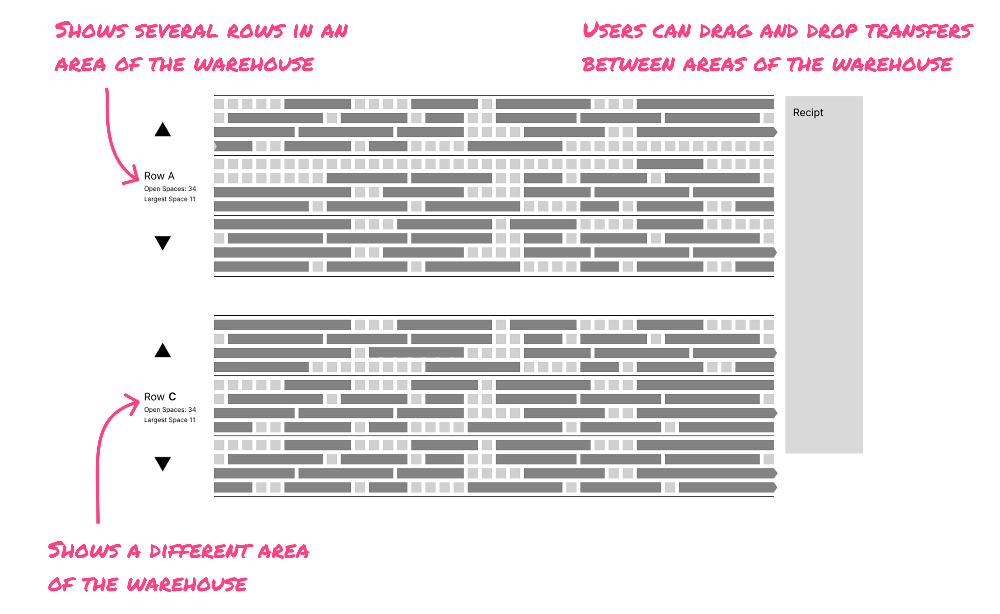
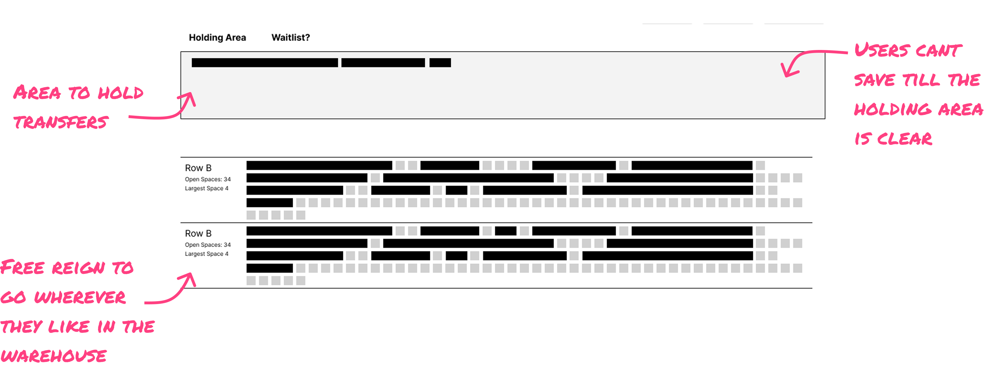
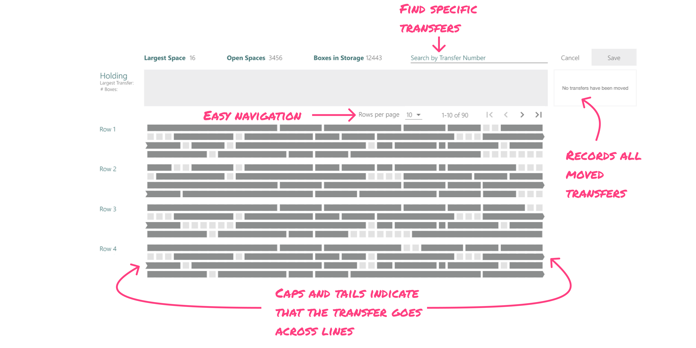
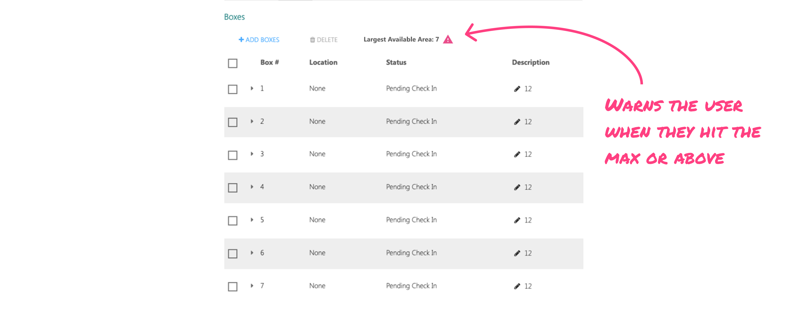
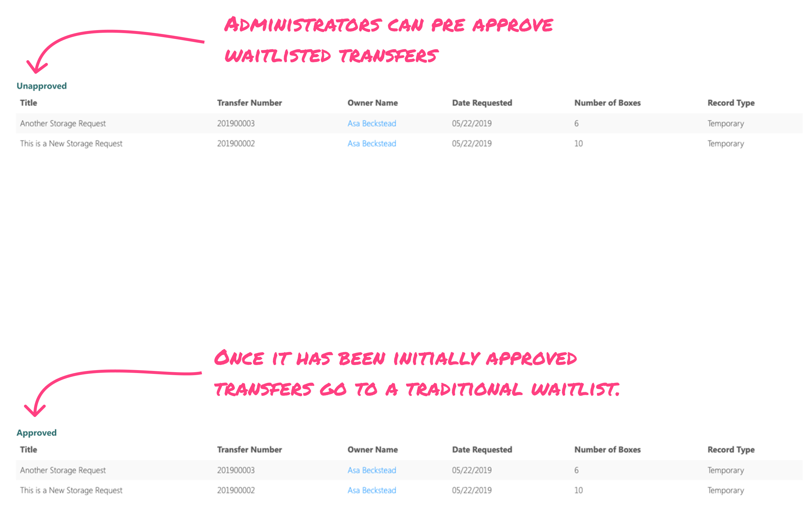

Problem
RMS manages the long-term storage of transfers — groups of physical boxes. People submit transfers, check stored ones out, and eventually decommission them.
The system worked well until it had been running for a while. Every decommission left a gap, and new transfers rarely fit the gaps exactly. Over time the warehouse filled with empty spaces that could only hold small transfers — and when a large transfer arrived, RMS had nowhere to put it. Large transfers were the reason this project existed.
Centeva was asked to build two things: a way to move transfers within the warehouse, and a waitlist to improve storage capacity and efficiency. I worked through several iterations of both, directly with the client and the development team. The screens that follow are the working wireframes.
Making Room
Two constraints sat over this whole chapter: our team was building inside a system that was new to us, and the turnaround was tight — past the deadline, the work stopped paying for itself.
The warehouse is massive, but the system already knew where every empty space was. So my first idea was automation: tell the system how much space you need, and let it work out the moves to create it.

It never left the building. The dev team’s verdict was simple: that’s a lot of math. No go.
So I simplified the automation into something we could share with the client: pick a transfer, and the system lists every place it could go.

The client passed. On paper, their ask had only ever been the ability to move transfers within the warehouse — but what they actually wanted was to create larger spaces, and a destination list for one transfer at a time didn’t get them there. It answered where a transfer could go without ever showing them the warehouse itself.
So round three went the other direction — fully manual. Drag and drop, in a warehouse this large.

The first version was rough — when I put it in front of the client, they struggled to use it. So I made navigation between warehouse areas more fluid and added a holding area: pick a transfer up anywhere, set it down anywhere, and you can’t save until the holding area is clear. Nothing gets lost mid-move.

The chosen solution kept the holding area and rounded it out: search by transfer number, at-a-glance stats — largest space, open space, boxes in storage — and a running log of every move.

There’s an irony here: after the automation ideas fell away, the UI that won was itself a heavy dev lift. But this one the client loved — and when we built it, it landed. For the first time they could see the whole warehouse and optimize it on their own terms: their moves, their judgment about what to ask of the warehouse floor, recoverable at every step.
A Waitlist That Isn’t Just a Line
The second ask was the waitlist, and discovery reframed it. Three realities shaped how this one had to work:
- Boxes have to be stored together as a group, so “available space” depends on the shape of what’s arriving.
- Smaller transfers were inadvertently prioritized because they were easier to accommodate — which meant large transfers could wait years.
- Every new transfer needed approval before it could be stored — but approval only came once it reached the top of the waitlist.
The sharpest problem, though, was the first minute — not the years. Clients had no way of knowing a transfer would be waitlisted before they submitted it. They found out after, and it was generating customer care calls.
So my first move was to make the constraint visible before submission — turn the waitlist from a surprise into a limiting factor users could see coming. A warning icon appears the moment a transfer grows past the largest available space.

The warning lays out the choice plainly: split the boxes across two transfers, or wait for a large enough space to open. Either way, nobody lands on the waitlist without having decided to.

Then I went looking for what else the wait was hiding. Through interviews and mapping the experience end to end, one weak point stood out: because approval only happened at the top of the list, a transfer could wait a year or more — and then be rejected.
The fix was to move approval inside the wait. Admins pre-approve transfers while they sit on the waitlist, so by the time space opens up, the answer is already yes.

We built this one too, and the client was happy with it. Waitlisting stopped being something that happened to people and became something they chose with eyes open — and the wait itself started doing useful work.
The Fight for Search
During discovery I kept noticing the decommission page. Poor hierarchy, difficult to use — and nowhere in the client brief.
It should have been. Dispositioning was where our clients spent the most time — a third of the job.
The original designers hadn’t anticipated how many transfers would be waiting to decommission at once, so the page was one gigantic list. Scroll, wait for it to load. Scroll, wait for it to load. Six times over.
And there was no search. Clients regularly needed to locate specific transfers to coordinate decommissioning with their own clients, so they leaned on the browser’s Ctrl+F — which only searches content that’s already loaded. Find nothing, scroll, load, try again.
By the time all this was clear, our time on the project was up.
I fought for the search anyway. It went in as a last-minute addition — a small build, and the change our clients thanked us for most.
Learning
My instinct on this project was to remove work. The client wanted to stay in command of it — to see the whole warehouse, keep every move recoverable, and decide for themselves what to ask of the people doing the lifting. The designs that shipped were the ones that respected that: not the cleverest systems on the board, but the ones that handed the client the warehouse instead of a black box.